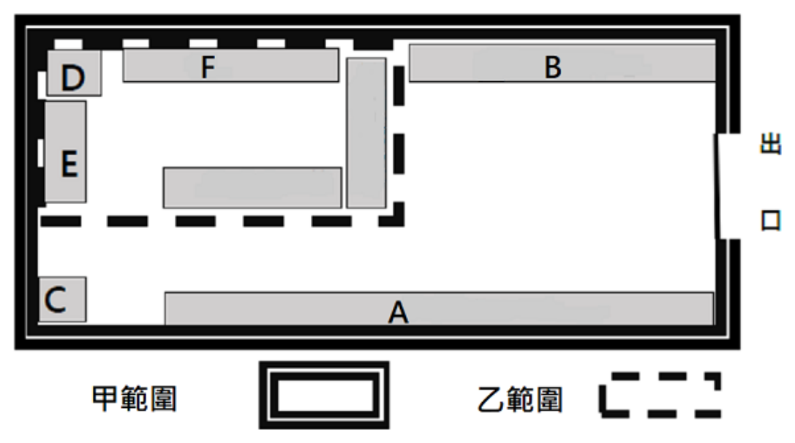

開卷有益 ／
藥師 ／ 藥事行政與法規 ／ 114 年第 2 次114 年第 2 次藥師藥事行政與法規試題與答案
這一頁是民國 114 年第 2 次藥師藥事行政與法規的整份歷屆試題，共 50 題，題目與標準答案出自考選部「國家考試試題及測驗式試題答案」開放資料，其中 43 題附有詳解。以下逐題列出題幹、選項與答案；要計時作答或記錄成績，請用線上練習。
考選部原始場次代碼：114090
線上作答這一科 →
全部 50 題
第 1 題
依據長期照顧服務法，下列何者應以長照機構法人方式設立？
（A） 居家式服務機構（B） 住宿式服務機構（C） 綜合式服務機構（D） 社區式日間照顧中心答案：（B）
詳解與考點 正解：本題考長期照顧服務法對不同服務類型的設立主體要求。（B）住宿式服務機構依法應以長照機構法人方式設立，因其提供住宿照顧，設立與管理要求較高，故選 B。
A：居家式服務機構不是一律必須以長照機構法人設立；不能把住宿式的專屬設立要求套用到（A）。
C：綜合式服務機構是否適用特定設立要求，須依其實際提供的服務類別與相關規範判斷，不是僅因名稱為「綜合式」就當然等同住宿式。
D：社區式日間照顧中心屬社區式服務範疇，並非題目所問依法必須以長照機構法人設立的住宿式機構。
本題考點：Long-Term Care Services Act——判斷設立主體時，先區分居家式、社區式與住宿式服務；residential long-term care institution——看到住宿式服務機構時，連結其應以長照機構法人設立的要求；service-type classification——法規題須以實際服務型態判定，不能只憑機構名稱類推。
第 2 題
下列何者非屬衛生福利部掌理事項中之重要政策？
（A） 中醫藥發展政策（B） 醫事人員及醫事機構管理政策（C） 家庭暴力、性侵害及性騷擾防治政策（D） 食品、藥物、化粧品管理政策本題送分，無標準答案
詳解與考點 本題經考選部公告一律給分。衛生福利部掌理事項中，(B)醫事人員及醫事機構管理政策與(C)家庭暴力、性侵害及性騷擾防治政策，依現行衛生福利部組織法第2條及處務規程均屬其法定職掌範圍，兩者是否應為題目所欲排除之「非屬」選項出現分歧，尤其保護服務相關政策橫跨社政與衛政體系，部分見解認為應主要歸屬其他主管機關而非衛生福利部。(A)中醫藥發展政策、(D)食品藥物化粧品管理政策則明確屬衛生福利部職掌，較無爭議。作答以現行衛生福利部組織法為準。
第 3 題
藥害救濟及預防接種救濟之中央衛生主管機關分別為何？
（A） 藥害救濟基金會、衛生福利部食品藥物管理署（B） 藥害救濟基金會、衛生福利部疾病管制署（C） 衛生福利部、衛生福利部（D） 衛生福利部食品藥物管理署、衛生福利部國民健康署答案：（C）
詳解與考點 正解：本題區分的是中央衛生主管機關與實際執行或受託辦理的機構。藥害救濟及預防接種救濟的中央衛生主管機關均為衛生福利部，故選 C。
A：藥害救濟基金會是救濟業務的辦理機構，衛生福利部食品藥物管理署則是衛生福利部所屬機關，兩者均不取代中央主管機關的法律地位。
B：藥害救濟基金會與衛生福利部疾病管制署各有其執行職掌，但題目問的是兩項救濟的中央衛生主管機關，不能以執行單位代替。
D：衛生福利部食品藥物管理署與衛生福利部國民健康署皆為所屬機關，不是兩項救濟法規所稱的中央衛生主管機關。
本題考點：中央主管機關（central competent authority）——先辨明法規授權的主管機關，再區分其所屬機關與受託機構；藥害與疫苗救濟（drug injury relief and vaccine injury compensation）——救濟的承辦或審議機制不會改變中央衛生主管機關的身分。
第 4 題
依據藥事法，對於涉嫌之偽藥、禁藥應先行就地封存，這個任務應由下列何者執行？
（A） 法院強制執行處（B） 直轄市或縣（市）衛生主管機關（C） 衛生福利部食品藥物管理署（D） 直轄市或縣（市）警察局答案：（B）
詳解與考點 正解：涉嫌偽藥或禁藥時，需要能立即到現場採取保全措施；就地封存的法定執行主體是直轄市或縣（市）衛生主管機關，故選 B。
A：法院強制執行處處理民事強制執行，並非藥事行政上對涉嫌偽藥、禁藥的就地封存機關。
C：衛生福利部食品藥物管理署負責中央藥政與監督業務，但題幹所問的現場先行封存由地方衛生主管機關執行。
D：警察機關得依法協助維持執行秩序，卻不是藥事法指定負責就地封存的主管機關。
本題考點：藥事行政執行（pharmaceutical administrative enforcement）——遇涉嫌違法藥品時，先看法規指定的現場執行機關；地方衛生主管機關（local health authority）——需要立即查核、封存的藥事案件，通常由具有轄區執行權限的地方機關處理。
第 5 題
依據藥事法，降血壓藥廣告可以在下列何種刊物刊登？
（A） 消費者雜誌（B） 台灣醫學會期刊（C） 健康世界雜誌（D） 運動健美雜誌答案：（B）
詳解與考點 正解：降血壓藥廣告的判準在刊物是否屬供醫療專業人員閱覽的專業刊物。臺灣醫學會期刊以醫療專業讀者為對象，符合可刊登的條件，故選 B。
A：消費者雜誌面向一般大眾，即使內容涉及健康資訊，也不是專供醫療專業人員閱覽的刊物。
C：健康世界雜誌的讀者為一般民眾，不能因主題與健康相關而視為專業醫學期刊。
D：運動健美雜誌屬一般大眾刊物；分辨關鍵在讀者身分與刊物性質，不在是否可能出現健康內容。
本題考點：藥物廣告媒體限制（drug advertising media restriction）——先辨認藥品廣告是否僅得刊於專業醫療刊物；專業刊物判別（professional publication）——以主要讀者是否為醫事專業人員判斷，不以雜誌名稱或健康主題判斷。
第 6 題
依傳染病防治法，為因應COVID-19公共衛生事件，得報請行政院同意設置下列何者？
（A） 中央流行疫情指揮中心（B） 中央傳染病防治中心（C） 中央傳染病管制局（D） 中央緊急應變局答案：（A）
詳解與考點 正解：COVID-19 公共衛生事件需要跨部會統籌，傳染病防治法所設計、並得報請行政院同意設置的應變組織是中央流行疫情指揮中心，故選 A。
B：中央傳染病防治中心不是題幹所指的法定應變組織名稱。
C：中央傳染病管制局並非因應重大傳染病事件而得依該程序設置的組織。
D：中央緊急應變局也不是傳染病防治法針對疫情所定的跨部會指揮架構。
本題考點：中央流行疫情指揮中心（Central Epidemic Command Center）——遇重大疫情且需跨部會協調時，依報請行政院同意的程序判斷是否設置；傳染病緊急應變（infectious disease emergency response）——辨認法定組織時以正式名稱與設置程序為準，不能以相近名稱替代。
第 7 題
依據全民健康保險法，醫療服務給付項目及支付標準應以相對點數反應各項服務成本及以同病、同 品質同酬為原則，下列何者非屬得以訂定之方式？
（A） 論量（B） 論年（C） 論品質（D） 論病例答案：（B）
詳解與考點 正解：題幹要求找出未列於健保醫療服務給付項目及支付標準的訂定方式。論量、論品質及論病例均可用以反映服務成本或品質；論年不是此處的支付方式，故選 B。
A：論量依提供服務的數量計付，是支付制度可採的方式。
C：論品質將支付與照護品質連結，符合題幹所述同品質同酬的方向。
D：論病例以病例或診斷群組為支付單位，可避免只以單項服務量作為唯一基礎。
本題考點：健保支付方式（National Health Insurance payment methods）——先看支付單位是服務量、品質或病例，再判斷是否屬法定可訂方式；同病同品質同酬（equal pay for same disease and quality）——判斷選項時以成本與品質的支付設計為核心，不以年度作為支付單位。
第 8 題
依據藥事法及藥品安全監視管理辦法，藥品安全監視範圍及期間分別為何？
（A） 藥事法所稱之新藥：5年（B） 所有領有許可證之藥品：藥品許可證有效期間（C） 所有領有藥品許可證之西藥及中藥屬藥事法所稱之新藥，或公告須執行藥品安全性監視者：藥品許 可證有效期間（D） 所有領有藥品許可證之西藥及中藥屬藥事法所稱之新藥，或公告須執行藥品安全性監視者：5年答案：（C）
詳解與考點 正解：藥品安全監視要同時判斷適用範圍與期間。領有藥品許可證的西藥、中藥中，屬藥事法所稱新藥或經公告須執行安全監視者，監視期間為藥品許可證有效期間，故選 C。
A：只列藥事法所稱新藥而排除公告須執行安全監視的藥品，且將期間固定為 5 年，範圍與期間都過度簡化。
B：將所有領有許可證的藥品一概納入，忽略安全監視是針對新藥或公告指定藥品的制度。
D：適用範圍雖接近，但把監視期間寫成一律 5 年，與許可證有效期間的判準不符。
本題考點：藥品安全監視（pharmacovigilance）——先確認藥品是否為新藥或公告監視對象，再看其許可證有效期間；藥品許可證（drug license）——涉及監視期限時，以許可證效期作為判準，不能固定套用單一年數。
第 9 題
關於藥局憑證保存規定，下列何者錯誤？
（A） 調劑zolpidem之處方箋，至少保存5年（B） 調劑valsartan之處方箋，至少保存3年（C） 調劑pseudoephedrine類製劑之來源憑證，至少保存5年（D） 調劑amlodipine之來源憑證，至少保存3年答案：（C）
詳解與考點 正解：本題須先依藥品與憑證類型分別判斷保存期間。pseudoephedrine 類製劑的來源憑證適用至少保存 3 年的規定，不是（C）所寫的至少 5 年，故選 C。
A：zolpidem 為管制藥品，調劑處方箋至少保存 5 年，敘述正確。
B：valsartan 的調劑處方箋至少保存 3 年，符合一般處方箋的保存要求。
D：amlodipine 的來源憑證至少保存 3 年；分辨關鍵在來源憑證與管制藥品處方箋適用不同年限。
本題考點：藥局憑證保存（pharmacy record retention）——先分辨處方箋或藥品來源憑證，再套用相應保存期間；管制藥品紀錄（controlled drug records）——管制藥品處方箋的保存要求較長，不能直接移用到一般藥品來源憑證。
第 10 題
小明為剛畢業取得資格之藥師，大明為醫院中醫部門藥局執業20年的藥劑生，二人合作開設藥局， 下列敘述何者正確？
（A） 小明可為藥局之負責藥師，與衛生福利部中央健康保險署簽訂特約（B） 大明可以設立執行中藥業務之藥局，調劑中藥處方（C） 大明可以調劑丁基原啡因（Buprenorphine）處方（D） 大明可以負責人身分向金融機構申請專屬帳戶，提供衛生福利部中央健康保險署撥付健保帳款答案：（B）
詳解與考點 正解：題幹刻意區分藥師與具有中藥執業資格的藥劑生之業務範圍。大明得設立執行中藥業務的藥局並調劑中藥處方，故選 B。
A：剛取得藥師資格不等於已符合以負責藥師身分與健保署簽訂特約的全部條件，不能把資格取得直接等同於特約資格。
C：Buprenorphine 屬須受嚴格管理的管制藥品，不能因大明得執行中藥業務而推論其可調劑。
D：設立或調劑中藥業務的資格，不能直接延伸為健保特約帳款專屬帳戶的負責人資格；兩者分別受不同規範控制。
本題考點：藥師與藥劑生業務範圍（scope of pharmacy practice）——先確認執業人員的資格及可執行的藥品類別，不能由一項中藥資格推及全部藥事業務；健保特約資格（National Health Insurance contracting qualification）——專業證書、執業資格與特約資格須逐一核對，不可互相替代。
第 11 題
民國110年入學之藥學系學生，如畢業後欲從事中藥製劑製造供應及調劑，應修習中藥課程標準為 何？
（A） 中藥16學分及中藥場域實習80小時（B） 中藥16學分及中藥場域實習160小時（C） 中藥17學分及中藥場域實習80小時（D） 中藥17學分及中藥場域實習160小時答案：（D）
詳解與考點 正解：本題以民國 110 年入學作為適用門檻；該屆藥學系學生畢業後欲從事中藥製劑製造供應及調劑，須完成中藥 17 學分及中藥場域實習 160 小時，故選 D。
A：中藥學分與實習時數都未達題目所適用的標準。
B：實習時數雖為 160 小時，但中藥課程僅 16 學分，少於所需學分。
C：中藥課程雖為 17 學分，但場域實習僅 80 小時，未達所需時數。
本題考點：中藥課程標準（Chinese medicine curriculum standard）——先以入學年度決定適用版本，再同時核對學分與實習時數；中藥場域實習（Chinese medicine field practicum）——實習時數是獨立門檻，不能因課程學分符合而省略。
第 12 題
藥局設置平面圖如下，甲範圍是藥事作業處所，乙範圍是調劑處所，A、B、C、D、E、F皆為置放 處，下列敘述何者錯誤？

（A） 醫師處方藥可放在A處（B） 乙範圍僅得從事處方調劑（C） B處可置放醫療器材（D） 供處方調劑之冷鏈藥品冰箱應設置於乙範圍答案：（A）
第 13 題
小明藥師開設藥局，並找了藥劑生大明一同經營，下列敘述何者錯誤？
（A） fentanyl只有小明可調劑，且只能調劑一次（B） tramadol只有小明可調劑，且要注意處方箋上是否載有管制藥品使用執照號碼（C） zopiclone大明可調劑，且本藥品不須使用管制藥品專用處方箋（D） zolpidem大明、小明皆可調劑，本處方箋應妥善保存5年答案：（B）
詳解與考點 正解：tramadol 的處方箋是否載有管制藥品使用執照號碼，與可調劑者資格是兩個問題；（B）把可調劑者限於小明，錯將其管制分級效果擴張為藥劑生一概不得調劑，因此是錯誤敘述，故選 B。
A：fentanyl 屬須嚴格管制的麻醉藥品，僅得由藥師調劑，且處方箋限調劑一次，敘述正確。
C：zopiclone 的調劑資格與第一、二級管制藥品不同；大明得調劑，且不須使用管制藥品專用處方箋。
D：zolpidem 可由大明或小明調劑，相關處方箋應保存 5 年，敘述正確。
本題考點：管制藥品分級（controlled drug scheduling）——先判斷藥品分級，再分別確認可調劑者、處方箋形式與保存要求；麻醉藥品調劑（narcotic dispensing）——麻醉藥品的調劑資格較嚴，不能與其他管制藥品一概而論。
第 14 題
下列關於藥師執業執照更新之敘述，何者正確？
（A） 須在執業執照更新日前2個月內辦理更新作業（B） 領取藥師證書未超過5年申請執業登記，其執業執照之更新日期為自藥師證書發證屆滿第6年之翌日（C） 歇業後重新申請執業登記，無論是否逾原發執業執照日期，其執業執照之更新日期一律為自執業登 記日起算6年（D） 藥師申請執業執照更新，應檢具綜合臨床藥學訓練證明文件答案：（B）
第 15 題
下列有關藥師調劑之敘述，何者錯誤？
（A） 藥師應按處方調劑，不得錯誤（B） 藥品未備或缺乏時，應通知原處方醫師，請其更換，不得任意省略或代以他藥（C） 藥師執業執照應懸掛於調劑處所（D） 非有正當理由，不得拒絕為調劑答案：（C）
詳解與考點 正解：本題錯在將藥師執業執照的懸掛位置說成「調劑處所」。法定要求是於執業處所揭示，不能逕將其限縮成調劑處所，故選 C。
A：藥師應依處方正確調劑，避免調劑錯誤，敘述正確。
B：藥品未備或缺乏時，應通知原處方醫師處理，不得自行省略或任意以其他藥品替代。
D：藥師非有正當理由不得拒絕調劑，這是保障處方調劑可近性的要求。
本題考點：藥師調劑義務（pharmacist dispensing duty）——遇缺藥時先回到原處方醫師，不可自行替代；執業執照揭示（practice license display）——法規位置用語須精確區分執業處所與調劑處所，不能自行限縮。
第 16 題
依藥師法之規定，下列何者為藥師業務？
（A） 施打疫苗（B） 毒癮戒治（C） 藥品販賣（D） 抽血答案：（C）
詳解與考點 正解：題目問的是藥師法所列的藥師業務，而非藥師可能在其他制度下參與的協作服務。藥品販賣直接屬藥師業務範圍，故選 C。
A：施打疫苗屬醫療或公共衛生服務，不能僅因藥師可能參與相關作業，就視為本題所問的法定藥師業務。
B：毒癮戒治涉及醫療與成癮治療服務，不是藥師法列舉的藥師業務項目。
D：抽血是檢驗或醫療處置，與藥師法所列的藥師業務不同。
本題考點：藥師業務（pharmacy practice）——題幹問法定業務時，以法律列舉的核心藥事行為判斷；跨專業協作（interprofessional collaboration）——可能參與的健康服務不必然等於該專業法中的法定業務。
第 17 題
下列有關藥師懲戒委員會之敘述，何者錯誤？
（A） 藥師懲戒委員會之委員，應就不具民意代表身分之藥學、法學專家學者及社會人士遴聘之，其中法 學專家學者及社會人士之比例不得少於三分之二（B） 藥師懲戒委員會由中央或直轄市、縣（市）主管機關設置（C） 藥師懲戒委員會應將移付懲戒事件，通知被付懲戒之藥師，並限其於通知送達之翌日起二十日內提 出答辯或於指定期日到會陳述；未依限提出答辯或到會陳述者，藥師懲戒委員會得逕行決議（D） 被懲戒人對於藥師懲戒委員會之決議有不服者，得於決議書送達翌日起二十日內，向藥師懲戒覆審 委員會請求覆審答案：（A）
第 18 題
若在夜市之檳榔攤販賣保力達B液，下列敘述何者最適當？
（A） 該檳榔攤販若依成藥及固有成方製劑管理辦法規定，將保力達B液置於乙類成藥專設櫥櫃內，並妥 善貯藏，則可依法販賣之（B） 該檳榔攤得依大法官釋字第711號解釋，宣告藥師法第11條「藥師執業以一處為限」違憲，可聘管 理藥師兼管攤位，以調劑保力達B液（C） 衛生主管機關取締該檳榔攤，主要因該檳榔攤無藥商執照而販售藥品（D） 目前保力達B液與維士比液，均以藥食兩用管理，但販賣仍需向衛生福利部食品藥物管理署登記備 查答案：（C）
詳解與考點 正解：販賣藥品首先須具備合法藥商資格；檳榔攤未取得藥商執照而販售保力達 B 液，正是衛生主管機關取締的主要原因，故選 C。
A：即使藥品放置方式符合乙類成藥的貯藏要求，也不會因此取得藥商資格；貯藏規定與販售資格不能互相替代。
B：藥師執業地點的憲法爭點，不能使未具藥商執照的檳榔攤合法販藥，更不能據此推論可在攤位調劑藥品。
D：將保力達 B 液與維士比液概括為藥食兩用並主張僅須登記備查，不能取代藥品販售所需的藥商資格。
本題考點：藥商資格（drug seller qualification）——判斷販售藥品是否合法時，先核對販售場所是否具藥商執照；成藥管理（over-the-counter drug regulation）——成藥的陳列或貯藏要求不會免除合法販售主體的資格要求。
第 19 題
日前發生某藥商，將藥品「正露丸」過期品重新包裝、更改標籤及有效期間標示。對於該業者之查 處，下列何者最適當？
（A） 塗改或更換藥品有效期間標示者，可處10年以下有期徒刑（B） 該藥品因係過期品，應屬於劣藥管理（C） 本案涉案行為屬仿製藥，以偽造文書論罪（D） 業者須提出藥品性狀、成分、質、量或強度等化驗鑑定數據答案：（A）
第 20 題
依據藥師法及管制藥品管理條例，下列敘述何者正確？
（A） 麻醉藥品得由藥師及藥劑生調劑（B） 藥師調劑，如藥品未備或缺乏時，得以他藥替代（C） 藥師應親自主持其所經營之藥局業務，受理醫師處方或依中華藥典、國民處方選輯之處方調劑（D） 藥師執業以一處為限，報備支援以藥商為限答案：（C）
詳解與考點 正解：藥師應親自主持所經營藥局的業務，受理醫師處方，或依中華藥典、國民處方選輯的處方調劑，正符合法定業務範圍，故選 C。
A：麻醉藥品的調劑資格較嚴，不能將藥劑生與藥師並列為均得調劑者。
B：藥品未備或缺乏時，藥師應通知原處方醫師，不能擅自以其他藥品替代。
D：藥師雖以一處執業為原則，但報備支援並非僅限於藥商，將支援場所限縮為藥商不正確。
本題考點：藥師親自主持（personal supervision by pharmacist）——經營藥局時，藥師須親自負責核心藥事業務；處方調劑（prescription dispensing）——缺藥時應回到原處方醫師處理，不得自行替代藥品。
第 21 題
依據藥事法，有關西藥、中藥販賣業者之敘述，下列何者正確？
（A） 兼任藥師可以駐店管理西藥販賣業者之藥品及其買賣（B） 專任藥劑生可以駐店管理西藥販賣業者售賣麻醉藥品（C） 專任中醫師可以駐店管理中藥販賣業者之藥品及其買賣（D） 分設營業處所，得無需聘請藥師駐店管理答案：（C）
詳解與考點 正解：中藥販賣業者的藥品及其買賣，可由專任中醫師駐店管理，故選 C。
A：西藥販賣業者須由專任藥師駐店管理，兼任藥師不符合駐店管理的要求。
B：麻醉藥品的管理與調劑限制較嚴，不能由專任藥劑生駐店管理西藥販賣業者售賣。
D：營業處所分設時，各處所仍須符合駐店管理的要求，不能因為分設而免聘藥師。
本題考點：藥品販賣業者管理（drug seller management）——先分西藥與中藥販賣業者，再核對可駐店管理的專業人員；專任駐店管理（full-time on-site supervision）——判斷營業處所是否合法時，專任性與各分設處所的管理要求都要分別符合。
第 22 題
依據藥事法，下列有關藥商僱用推銷員執行推銷業務之敘述，何者正確？
（A） 推銷員可以向藥局推銷非受僱藥商所製造之藥品（B） 推銷員可以向醫學研究機構推銷臨床試驗藥品（C） 為利推銷受僱藥商所經銷之藥品，得將藥品拆封販售（D） 不得沿途推銷受僱藥商所製售之藥品答案：（D）
詳解與考點 正解：判斷重點在推銷員只能執行受僱藥商範圍內的推銷業務。藥事法明定推銷員不得沿途推銷受僱藥商所製售之藥品，所以（D）符合禁止規定，故選 D。
A：推銷員與非受僱藥商沒有該項業務關係，（A）把他藥商製造的藥品也列為可推銷範圍，逾越受僱推銷員的身分。
B：臨床試驗藥品的供應與使用受試驗管理，不是一般推銷員得向醫學研究機構進行的商業推銷行為；（B）混淆了研究用藥管理與上市藥品推銷。
C：藥品拆封會破壞原有包裝及可追溯性，（C）不能以推銷便利作為拆封販售的依據。
本題考點：藥商推銷員業務範圍（pharmaceutical sales representative）——先確認推銷者受僱於何藥商，再判斷其行為是否落在法定推銷範圍；藥品包裝完整性（drug packaging integrity）——遇到拆封後再販售的敘述，應先排除以商業便利取代包裝與流向管理的說法。
第 23 題
依據藥事法，對於藥商的管理規定，下列敘述何者正確？
（A） 藥商申請停業，應將藥商許可執照及藥物許可證隨繳當地衛生主管機關，每次停業期間最長不得超 過半年（B） 民國82年2月5日前列冊登記之中藥商，得從事非屬中醫師處方藥品之零售業務（C） 藥商持有經中央衛生主管機關公告為必要藥品之許可證，如有無法繼續製造、輸入或不足供應該藥 品之虞時，應至少於三個月前向中央衛生主管機關通報（D） 凡取得藥師執照者，即可於中藥製造業擔任駐廠監製藥師答案：（B）
第 24 題
某君想要經營西藥零售及輸入業務，依據藥事法規定，下列敘述何者正確？
（A） 應向衛生福利部食品藥物管理署申請藥商許可執照（B） 申請藥商許可執照時，營業場所的範圍也包括貯存藥品倉庫（C） 輸入之製劑，可直接委託符合藥品優良製造規範之藥廠分裝後出售（D） 領有藥商許可執照後可以兼售農藥答案：（B）
詳解與考點 正解：本題問西藥零售及輸入業的藥商設置範圍。申請藥商許可執照時，營業場所不只指對外販售處，也包括實際貯存藥品的倉庫，所以（B）正確，故選 B。
A：藥商許可執照的申請受地方衛生主管機關管理，（A）直接指定向衛生福利部食品藥物管理署申請，將主管機關層級混為一談。
C：輸入製劑再分裝涉及藥品製造與許可管理，不能只因受託藥廠符合藥品優良製造規範就可直接分裝出售；（C）漏掉必要的法定程序。
D：藥商許可執照的業務範圍是藥事管理事項，（D）不能據此延伸為兼售農藥的資格。
本題考點：藥商營業場所（pharmaceutical business premises）——判斷營業場所時，將藥品實際貯存倉庫一併納入；藥品分裝管理（drug repackaging）——遇到輸入製劑再分裝，應另檢核製造資格與法定許可，不能只看受託工廠是否符合 GMP。
第 25 題
依據藥事法，下列敘述何者錯誤？
（A） 未經核准擅自製造者為偽藥（B） 所含有效成分之質、量或強度與核准不符者為劣藥（C） 將他人產品抽換或摻雜者為劣藥（D） 塗改或更換有效期間之標示者為偽藥答案：（C）
詳解與考點 正解：本題為負向題，關鍵在區分偽藥與劣藥的法定類型。將他人產品抽換或摻雜屬於產品身分遭替換的偽藥情形，不是（C）所稱的劣藥，因此（C）為錯誤敘述，故選 C。
A：未經核准而擅自製造的產品，屬偽藥的法定情形；（A）敘述正確，故非答案。
B：有效成分的質、量或強度與核准內容不符，屬劣藥；（B）敘述正確，故非答案。
D：塗改或更換有效期間標示，屬偽藥的法定情形；（D）敘述正確，故非答案。
本題考點：偽藥（counterfeit drug）——遇到未經核准製造、抽換摻雜或竄改有效期間等身分造假情形，判為偽藥；劣藥（substandard drug）——遇到已核准品的成分質量、強度或品質條件不符時，判為劣藥，不可與身分替換混用。
第 26 題
下列違反藥事法之情事，何者屬行政罰？
（A） 擅用或冒用他人藥品之名稱、仿單或標籤者（B） 輸入禁藥（C） 製造藥品擅自添加非法定防腐劑者（D） 製造之藥品，被查獲有顯明變色、混濁、沈澱、潮解或已腐化分解者答案：（D）
詳解與考點 正解：判準是違規行為侵害的是藥品品質管理義務，還是偽藥、禁藥或非法添加的重大不法。製造藥品出現顯明變色、混濁、沈澱、潮解或腐化分解，屬品質不合格的行政管制情形，適用行政罰，所以（D）正確，故選 D。
A：擅用或冒用他人藥品名稱、仿單或標籤，涉及藥品身分與標示的假冒，不是單純品質缺失的行政處分類型。
B：輸入禁藥屬藥事法嚴重禁止行為，（B）不能與一般行政罰的品質違規混列。
C：製造藥品擅自添加非法定防腐劑，涉及不法添加成分，（C）不是題目所問的行政罰類型。
本題考點：行政罰與刑事責任區分（administrative sanction versus criminal liability）——先看違規是品質管理缺失，還是偽藥、禁藥或不法成分等重大不法；劣藥品質缺陷（substandard drug defect）——見到變色、混濁、沈澱、潮解或腐敗時，先判為品質不合格的藥事行政管理問題。
第 27 題
根據藥事法，下列敘述何者錯誤？
（A） 製造或輸入偽藥、禁藥者，應由原核准機關，廢止其全部藥物許可證、藥商許可執照、藥物製造許 可及公司、商業、工廠之全部或部分登記事項（B） 藥品許可證未申請展延者，其製造或輸入之業者，應即通知醫療機構、藥局及藥商，並於依法認定 應回收之日起二個月內收回市售品（C） 查獲之劣藥如為核准輸入者，應即封存，並由直轄市或縣（市）衛生主管機關責令原進口商限期退 運出口，屆期未能退貨者，沒入銷燬之（D） 查獲之偽藥或禁藥，沒入銷燬之答案：（B）
第 28 題
依藥事法規定，藥品之標籤、仿單或包裝，下列何者為應刊載事項？①廠商地址 ②批號 ③主治 效能或適應症 ④藥品許可證字號
（A） 僅①②③（B） 僅②③④（C） 僅①②④（D） ①②③④答案：（D）
詳解與考點 正解：藥品標籤、仿單或包裝的判斷要逐項核對法定應載內容。廠商地址、批號、主治效能或適應症，以及藥品許可證字號都屬應刊載事項，四項皆須具備，故選 D。
A、B、C：（A）漏列藥品許可證字號；（B）漏列廠商地址；（C）漏列主治效能或適應症。三者都因少列一項法定應載事項而不完整。
本題考點：藥品標示事項（drug labeling requirements）——遇到組合題時逐一勾選法定應載項目，再檢查各選項缺了哪一項；批號與許可證字號（batch number and drug license number）——前者用於產品追溯，後者用於核准身分辨識，兩者不可因用途不同而省略。
第 29 題
高博士與其研發團隊開發出治療心臟病之處方藥順利上市，有關藥事法對於此藥品廣告之規定，下 列敘述何者錯誤？①得藉採訪或報導開發過程為宣傳 ②藥品廣告核准之有效期間是一年 ③不得 於廣播及電視廣告 ④高博士可用個人名義向衛生單位申請藥品廣告
（A） 僅②③（B） ①②③（C） ②③④（D） ①④答案：（D）
詳解與考點 正解：本題為負向組合題，須找出錯誤的兩項。不得以採訪或報導開發過程迂迴作為藥品宣傳，而藥品廣告應由藥商申請，非由開發者個人名義申請；其餘關於一年有效期間及醫師處方藥媒體限制的敘述成立，因此錯誤組合是（D），故選 D。
A：（A）只列出廣告核准有效期間與醫師處方藥媒體限制，兩者均為合規敘述，沒有列出任何錯誤項目。
B：（B）雖納入藉採訪報導宣傳這個錯誤項目，卻把兩項合規敘述一併列為錯誤，組合不正確。
C：（C）納入個人名義申請這個錯誤項目，但漏列藉採訪報導宣傳的錯誤，同時把兩項合規敘述誤列其中。
本題考點：藥品廣告申請主體（drug advertisement applicant）——判斷申請資格時看是否為依法負責藥品廣告的藥商，不以研發者個人身分替代；處方藥廣告限制（prescription drug advertising restriction）——遇到媒體或置入式宣傳時，同時檢核可刊載媒體與是否以非廣告形式規避審核。
第 30 題
有關藥事法對於藥品廣告之規定，下列敘述何者錯誤？
（A） 某報社於報紙刊播與衛生主管機關原核准不符之藥品廣告，可對該報社處行政罰鍰（B） 因藥品許可證已由中央主管機關核准，故藥商可截取藥品許可證之處方內容、效能及注意事項之文 字圖畫，作為藥品廣告自行刊登（C） 某報社接受委託刊登藥品廣告，轄區衛生主管機關因稽查之需要，要求其提供委託刊播廣告者之姓 名、身分證字號及電話等資料時，報社不可拒絕（D） 醫師處方藥之廣告，只能刊登於學術性醫療刊物答案：（B）
詳解與考點 正解：本題為負向題，關鍵在藥品許可證核准不等於廣告可以自行刊登。即使內容取自許可證的處方、效能或注意事項，藥品廣告仍須經核准並符合核准內容；（B）主張可自行刊登，故為錯誤敘述，故選 B。
A：報社刊播與原核准內容不符的藥品廣告，得依法受行政罰鍰；（A）敘述正確，故非答案。
C：報社接受委託刊登廣告時，衛生主管機關為稽查而要求提供委託刊播者資料，不得拒絕；（C）敘述正確，故非答案。
D：醫師處方藥的廣告限於學術性醫療刊物刊登；（D）敘述正確，故非答案。
本題考點：藥品許可證與廣告核准（drug license versus advertising approval）——先分清產品上市核准與廣告刊播核准是兩件事，前者不能取代後者；廣告刊播者責任（advertising publisher responsibility）——刊播媒體須配合稽查與核准內容管理，不可只把責任歸於委託藥商。
第 31 題
依藥品嚴重不良反應通報辦法，藥商得知所持許可證藥品疑似發生導致死亡之不良反應，應於多久 內辦理通報？
（A） 24小時（B） 3日（C） 7日（D） 15日答案：（D）
詳解與考點 正解：觸發通報期限的是藥商所持許可證藥品疑似發生導致死亡的不良反應。依藥品嚴重不良反應通報辦法，應在 15 日內通報，所以（D）正確，故選 D。
A：24 小時不是本題死亡疑似不良反應的法定通報期限；（A）把其他緊急處理時點混入不良反應通報。
B：3 日不符合本題規定的通報期限；（B）期限過短。
C：7 日不符合本題規定的通報期限；（C）同樣未對應死亡疑似不良反應的通報時限。
本題考點：嚴重藥物不良反應通報（serious adverse drug reaction reporting）——先以事件嚴重性分類，再套用對應的通報時限；藥品安全監視（pharmacovigilance）——藥商得知所持許可證產品的重大安全訊號時，應依規定時限完成通報。
第 32 題
依據輸入醫療器材邊境抽查檢驗辦法，下列何者無須實施邊境查驗？
（A） 衛生套（保險套）（B） 耳溫槍（C） 一般醫用口罩（D） COVID-19家用型抗原檢測試劑答案：（B）
詳解與考點 正解：輸入醫療器材是否須邊境查驗，是依辦法所定的品項範圍判斷，不是只看名稱是否像醫療器材。題示品項中，耳溫槍無須實施該項邊境查驗，所以（B）正確，故選 B。
A、C、D：（A）衛生套、（C）一般醫用口罩及（D）COVID-19 家用型抗原檢測試劑均屬須實施邊境查驗的題示品項，三者都不能選。
本題考點：醫療器材邊境查驗（medical device border inspection）——先比對公告的受查驗品項，不以產品名稱或醫療器材等級自行推論；風險導向抽查（risk-based border sampling）——同屬醫療器材的產品仍可能因公告品項不同而有不同邊境管理結果。
第 33 題
下列何種情況，非屬醫療器材管理法規定應回收者？
（A） 原領有許可證或完成登錄，經公告禁止製造或輸入（B） 非於醫療器材製造許可有效期間內製造或輸入（C） 未經中央主管機關核准即變更中文品名（D） 於醫療器材製造後，原領有之許可證逾期但未申請展延者答案：（D）
詳解與考點 正解：判準在違規發生的時間點與產品本身是否落入法定回收事由。醫療器材製造後才發生原許可證逾期且未申請展延，並不當然使先前已合法製造的產品成為應回收品，因此（D）非屬法定應回收情況，故選 D。
A：原有許可證或完成登錄的醫療器材，經公告禁止製造或輸入後應回收；（A）敘述正確，故非答案。
B：在醫療器材製造許可失效期間製造或輸入的產品，欠缺合法製造或輸入基礎；（B）屬應回收情況。
C：中文品名未經中央主管機關核准即變更，會使產品標示與核准資料不一致；（C）屬應回收情況。
本題考點：醫療器材回收（medical device recall）——先核對產品是否在製造或輸入當時違反許可、登錄或核准資料，再判斷是否須回收；時間點判斷（temporal compliance）——許可證後續逾期不必然溯及先前合法製造的產品。
第 34 題
依據藥品查驗登記審查準則，關於學名藥查驗登記申請案之敘述，下列何者錯誤？
（A） 監視藥品之學名藥仿單，應依已核准之首家仿單核定方式記載（B） 中央衛生主管機關曾核准相同有效成分、劑型、劑量之藥品許可證，如其廢止或註銷之原因與藥品 療效安全性無關者，日後首家申請案得依學名藥規定辦理查驗登記（C） 醫用氣體中，二氧化碳及氧氣之製造方法係源自大氣分離者，得免附安定性試驗資料，惟須留廠備 查（D） 微脂粒（liposome）學名藥查驗登記申請案，除主成分須與已核准之首家相同之外，賦形劑成分及 其比例亦皆須相同答案：（D）
詳解與考點 正解：微脂粒（liposome）學名藥的申請重點在以必要的產品特性與比較資料證明可比性，不能把賦形劑成分及比例全部完全相同當作一律適用的絕對條件。（D）將此要求說得過度僵化，故為錯誤敘述，故選 D。
A：監視藥品的學名藥仿單應依已核准首家仿單的核定方式記載；（A）敘述正確，故非答案。
B：既有相同有效成分、劑型與劑量的許可證如因與療效、安全性無關的原因廢止或註銷，後續首家申請案得依學名藥規定辦理；（B）敘述正確，故非答案。
C：由大氣分離製得的二氧化碳及氧氣，得依規定免附安定性試驗資料並留廠備查；（C）敘述正確，故非答案。
本題考點：學名藥查驗登記（generic drug registration）——先看產品類型與審查所要求的可比性證據，避免把特定條件誤寫成所有成分比例絕對一致；微脂粒製劑可比性（liposome product comparability）——複雜劑型應以產品關鍵特性與必要比較資料判斷，不以單一絕對敘述取代整體審查。
第 35 題
依據西藥優良運銷準則，下列敘述何者錯誤？
（A） 品質風險管理係指於藥品生命週期間針對藥品品質風險之評估、管制、溝通及審查之系統化流程（B） 驗證係指證明任何設備之運轉正常且確實能達到預期結果之行為；確效一詞有時會廣義包含驗證之 概念（C） 公共服務責任係指執照持有者／許可證持有者對於已上市且於職責範圍內之藥品應確保適當並持續 供應，以涵蓋病患之需求（D） 實質檢核係專指簽署契約後對企業或人員進行之調查，或確認其符合特定標準答案：（D）
詳解與考點 正解：西藥優良運銷準則中的實質檢核（due diligence）是評估潛在企業或人員是否適合合作的程序，重點在簽署契約前的查核，不是僅指簽約後的調查。（D）把時點與範圍限縮錯誤，故選 D。
A：品質風險管理（quality risk management）確實涵蓋藥品生命週期中的風險評估、管制、溝通與審查；（A）敘述正確，故非答案。
B：驗證（qualification）可證明設備運轉正常並達預期結果，而確效（validation）有時廣義涵蓋驗證概念；（B）敘述正確，故非答案。
C：公共服務責任（public service obligation）要求執照或許可證持有者對職責範圍內已上市藥品維持適當、持續供應；（C）敘述正確，故非答案。
本題考點：實質檢核（due diligence）——合作契約簽訂前先查核對方的適格性與可靠性，不能把它限縮為事後調查；西藥優良運銷準則（Good Distribution Practice）——判讀名詞題時要分清風險管理、驗證、供應責任與合作對象查核各自處理的階段。
第 36 題
稽查發現冠脂妥（Crestor® 10mg）膜衣錠有下列何種情事，即屬藥事法所稱之偽藥？
（A） 其主治效能與核准不符（B） 所含成分rosuvastatin，其質、量或強度，與核准不符（C） 經檢驗所含成分為atorvastatin，與核准不符（D） 超過有效期間答案：（C）
詳解與考點 正解：關鍵在核准的有效成分是 rosuvastatin，而檢驗結果卻為 atorvastatin，這是以不同成分替代原核准產品的身分造假，屬偽藥；（C）正確，故選 C。
A：主治效能與核准不符屬核准內容不符的劣藥情形，不是以另一成分取代產品的偽藥情形。
B：（B）仍是 rosuvastatin，但其質、量或強度與核准不符，屬劣藥；分辨關鍵在成分沒有被完全換成另一藥物。
D：超過有效期間屬劣藥情形；（D）是保存期限問題，不是產品有效成分遭調換。
本題考點：偽藥與劣藥（counterfeit drug versus substandard drug）——有效成分被另一成分替代時判為偽藥；有效成分仍相同但品質、含量、強度、效能或期限不符時，判為劣藥。
第 37 題
下列有關網路販售藥品及醫療器材之敘述，何者錯誤？
（A） 百貨店、雜貨店及餐旅服務商皆可在網路販賣綠油精（B） 藥妝店可事前申請核准，在網路販售第一等級醫療器材（C） 衛生棉條及月亮杯，可在網路上販賣（D） 甲類成藥可在網路上販售答案：（D）
詳解與考點 正解：本題為負向題，網路販售須同時符合業者與品項限制。甲類成藥不在題示可於網路販售的範圍內，所以（D）為錯誤敘述，故選 D。
A：題示的百貨店、雜貨店及餐旅服務商可在規定範圍內網路販售綠油精；（A）敘述正確，故非答案。
B：藥妝店事前申請核准後，得網路販售第一等級醫療器材；（B）敘述正確，故非答案。
C：衛生棉條及月亮杯可在網路販賣；（C）敘述正確，故非答案。
本題考點：網路販售品項限制（online sale restrictions）——先同時核對販售業者資格與產品類別，不能因可經營零售就推論所有藥品均可網售；甲類與乙類成藥（Class A versus Class B OTC drugs）——遇到成藥網售題時，先分辨題示品項屬於何類成藥及其適用的通路限制。
第 38 題
醫療器材品質管理系統準則有關醫療器材製造業者之場所、品質管制、運銷等事項之規範，係參照 下列何項國際標準組織之標準內容訂定？
（A） ISO 14971（B） ISO 13485（C） ISO 10993（D） ISO 13488答案：（B）
詳解與考點 正解：醫療器材品質管理系統準則規範的是製造業者的場所、品質管制與運銷體系，所參照的國際標準是醫療器材品質管理系統 ISO 13485，所以（B）正確，故選 B。
A：ISO 14971 著重醫療器材風險管理，不是題目所問品質管理系統準則的參照標準。
C：ISO 10993 著重醫療器材生物相容性評估，不是製造場所、品質管制與運銷系統的標準。
D：ISO 13488 不是題目所指準則採用的醫療器材品質管理系統標準；（D）不能取代 ISO 13485。
本題考點：醫療器材品質管理系統（medical device quality management system）——題幹問製造、品質與運銷體系時，對應 ISO 13485；醫療器材標準區辨——看到風險管理選 ISO 14971，看到生物相容性選 ISO 10993，勿與品質管理系統混淆。
第 39 題
依據管制藥品管理條例，醫師應領有下列何者方得使用嗎啡藥品？
（A） 管制藥品登記證（B） 管制藥品輸入同意書（C） 管制藥品使用執照（D） 管制藥品製造同意書答案：（C）
詳解與考點 正解：醫師使用嗎啡這類管制藥品時，應持有的是管制藥品使用執照；它直接對應醫師的合法使用資格，因此（C）正確，故選 C。
A：管制藥品登記證不是本題醫師使用嗎啡所需的使用資格文件；（A）不能取代使用執照。
B：管制藥品輸入同意書用於輸入程序，不是醫師臨床使用管制藥品的憑據。
D：管制藥品製造同意書用於製造程序，不是醫師使用嗎啡的憑據。
本題考點：管制藥品使用執照（controlled drug use license）——題幹問醫師是否得使用管制藥品時，優先選直接授與使用資格的文件；管制藥品文件用途——輸入、製造、登記與使用各有不同主體與用途，不能以名稱相近互相替代。
第 40 題
依據管制藥品管理條例施行細則，有關管制藥品輸出、輸入同意書，下列敘述何者錯誤？
（A） 其輸出期限，自簽發日起不得超過三個月（B） 其輸入期限，自簽發日起不得超過六個月（C） 通關時同意書第二聯須經海關核驗簽署（D） 以使用一次為限答案：（B）
詳解與考點 正解：本題為負向題，管制藥品輸入同意書的輸入期限不得超過三個月，不是六個月；（B）把輸入期限寫錯，故為錯誤敘述，故選 B。
A：輸出同意書的輸出期限自簽發日起不得超過三個月；（A）敘述正確，故非答案。
C：通關時，同意書第二聯須經海關核驗簽署；（C）敘述正確，故非答案。
D：輸出、輸入同意書以使用一次為限；（D）敘述正確，故非答案。
本題考點：管制藥品輸出入同意書（controlled drug import and export consent）——先分別核對輸出與輸入的法定期限，不能以一般貿易許可期間套用；通關文件管理（customs document control）——同意書須依聯次完成海關核驗，且一次通關即失其重複使用效力。
第 41 題
小飛患有過動症，想隨身攜帶第三級管制藥品methylphenidate出國，以便持續治療，依管制藥品 管理條例施行細則，應提具下列何種資料報請衛生福利部食品藥物管理署備查？①載明病名、治療 經過及必須施用管制藥品理由之醫師診斷證明書 ②出國期間 ③機票影本 ④出國口岸 ⑤攜帶 數量及規格
（A） 僅①②④⑤（B） 僅②④⑤（C） 僅①⑤（D） ①②③④⑤答案：（A）
詳解與考點 正解：攜帶第三級管制藥品 methylphenidate 出國備查時，重點是讓主管機關確認醫療必要性、行程與攜帶藥品的可追溯性。應提具醫師診斷證明、出國期間、出國口岸及攜帶數量與規格，不包括機票影本，所以（A）正確，故選 A。
B：（B）漏列載明病名、治療經過及必須施用理由的醫師診斷證明，無法證明攜帶管制藥品的醫療必要性。
C：（C）只列診斷證明與藥品數量、規格，漏掉出國期間及出國口岸，資料不足以完成備查。
D：（D）納入機票影本，但該文件不是題示備查應提具資料；多列不必要項目使組合不正確。
本題考點：管制藥品攜帶出國備查（controlled drug travel declaration）——先分成醫療必要性、行程資訊與藥品可追溯資料三類核對；第三級管制藥品（Schedule III controlled drug）——攜帶出國時，診斷證明不能由交通憑證取代，攜帶量與規格亦須明確申報。
第 42 題
下列有關化粧品廣告之敘述，何者正確？
（A） 應事先申請中央或直轄市衛生主管機關核准（B） 應事先申請中央或直轄市傳播主管機關核准（C） 化粧品廣告核准文件，其有效期間為一年（D） 登載、宣播化粧品廣告不得有虛偽誇大之情事答案：（D）
詳解與考點 正解：化粧品廣告的管制重點在登載或宣播內容，而不是事前逐件許可。化粧品廣告不得有虛偽、誇大或引人錯誤之情事；（D）描述的正是內容禁止事項，故選 D。
A：（A）把化粧品廣告誤作須先向衛生主管機關申請核准的制度。現行管制是對廣告內容設禁止界線，並非逐則事前審核。
B：（B）將主管機關錯置為傳播主管機關。化粧品廣告的合規判斷屬衛生主管機關的化粧品管理範圍，不因使用傳播媒介而變成傳播許可。
C：（C）以前提不存在的廣告核准文件推導一年有效期。既無化粧品廣告事前核准程序，便無從適用該有效期間。
本題考點：化粧品廣告內容管理（cosmetics advertising regulation）——判斷廣告合規時，先看內容是否虛偽、誇大或引人錯誤；事前許可與內容管制（prior authorization and content regulation）——題目問廣告程序時，要先區分法律採逐件核准或直接禁止違規內容。
第 43 題
依據藥害救濟法，藥害救濟的請求權時效為自請求權人知有藥害時起幾年？
（A） 1（B） 3（C） 5（D） 10答案：（B）
詳解與考點 正解：題幹指定從請求權人知有藥害時起算，應套用知悉後的請求期間。自知有藥害時起，藥害救濟請求權期間為3年；（B）符合此一起算點與期間，故選 B。
A：（A）把知悉後的請求期間縮短為1年，與藥害救濟的規定不符。
C：（C）5年不是題幹所問、以知有藥害為起點的請求期間。分辨關鍵在起算事實與期間必須成對判讀。
D：（D）將起算點不同的較長期間混為同一規則。題幹已明定知有藥害時起算，不能改以10年作答。
本題考點：藥害救濟請求權時效（drug injury relief limitation period）——看到知有藥害的起算語句時，直接對應3年的主觀請求期間；時效起算點（limitation-period trigger）——同一制度可能有不同起算事實，先辨識題幹指定的事件再判斷年限。
第 44 題
關於罕見疾病防治及藥物法及其施行細則之敘述，下列何者錯誤？
（A） 疾病盛行率，指中央主管機關參照醫事人員依規定報告之資料及全民健康保險就醫資料所計算之年 盛行率（B） 至少每三年檢討一次疾病盛行率（C） 中央主管機關應將罕見疾病人口之變遷資料，納入衛生統計（D） 醫事人員發現罹患罕見疾病之病人或因而致死者，應自發現之日起七日內向中央主管機關報告答案：（D）
第 45 題
有關藥害救濟制度之立法宗旨，下列何者正確？
（A） 為使正當使用合法藥物而受害者，獲得及時救濟（B） 強化上市後品質監測，保障病人用藥安全（C） 與藥品優良製造準則競合，精進法規科學進步（D） 整合藥廠自主管理，促使國際多邊醫療合作答案：（A）
詳解與考點 正解：藥害救濟制度的核心是在正當使用合法藥物後受害時，提供及時的補償與救濟。（A）直接表達受害者、合法藥物與及時救濟三項立法目的，故選 A。
B：（B）描述的是上市後品質與安全監測的功能。這類藥物安全監視可預防或發現風險，但不是藥害救濟制度對既已受害者的補償宗旨。
C：（C）藥品優良製造準則處理的是製造品質系統，與藥害發生後的救濟制度分屬不同管制層次。
D：（D）國際醫療合作與藥廠自主管理不是藥害救濟制度的直接立法目的，未能說明受害者如何獲得補償。
本題考點：藥害救濟（drug injury relief）——看到正當使用合法藥物而受害時，判斷重點是受害者的補償與及時救濟；藥物安全監視（pharmacovigilance）——上市後風險監測著重發現安全訊號，不能與事故後的救濟機制混為一談。
第 46 題
全民健康保險醫事服務提供者向保險人申報其所提供之醫療服務點數及藥物費用，在無不可抗力因 素時，其申報期限應為：
（A） 提供醫療服務後之三個月內（B） 提供醫療服務之次月一日起六個月內（C） 提供醫療服務之當月即可申報（D） 提供醫療服務後之七日內答案：（B）
詳解與考點 正解：健保醫療服務點數與藥物費用的申報，以提供醫療服務次月1日起算，期限為6個月；（B）同時符合起算日與期間，故選 B。
A：（A）將期限縮短為服務後3個月內，且未依規定以次月1日作為起算點。
C：（C）把服務發生當月當成可申報起點，忽略申報期限是自次月1日起算的規則。
D：（D）7日內的期間過短，也不符合健保費用申報所定的6個月期限。
本題考點：健保費用申報期限（National Health Insurance claim filing deadline）——先抓服務發生的次月1日，再往後計6個月；期間起算（period commencement）——遇到次月起算的規則時，不可把服務當日或同月誤作起點。
第 47 題
依全民健康保險醫療辦法，有關醫師處方藥品，如未註明不可替代時之調劑，下列何者最適當？
（A） 僅在缺藥時，得以外銷專用藥取代（B） 藥師得依法，逕以學名藥替代（C） 可徵得病人同意自付差額後，以較高價他廠牌藥替代，但不包括癌症用藥（D） 若未告知保險對象，則不得以同成分、同劑型、同含量其他廠牌藥品替代答案：（D）
詳解與考點 正解：醫師未註明不可替代時，處方藥品的替代仍須符合告知保險對象及同成分、同劑型、同含量的條件。（D）指出未告知時不得逕行替代，符合調劑規則，故選 D。
A：（A）將外銷專用藥作為缺藥時的替代品，並非健保處方替代的合法條件。能否替代要看品項是否符合規定，不是只看是否缺藥。
B：（B）只要未註明不可替代，不等於藥師可不告知就直接任選學名藥。替代仍受同成分、同劑型、同含量與告知義務限制。
C：（C）以病人自付差額及較高價廠牌作為替代依據，混淆了替代條件與費用問題；癌症用藥也不是此規則的判準。
本題考點：處方調劑替代（prescription substitution）——未註明不可替代只是可能替代的前提，仍須完成法定條件；同成分、同劑型、同含量替代（same-ingredient, dosage-form, and strength substitution）——判斷替代可否時，同時核對品項等同性與告知保險對象。
第 48 題
依據全民健康保險醫事服務機構特約及管理辦法，醫事服務機構可向保險對象收取之費用，下列何 者正確？
（A） 衛生福利部中央健康保險署給付的藥品費用（B） 應自付差額之特殊材料（C） 衛生福利部中央健康保險署核可給付的檢查頂目（D） 醫療服務費用答案：（B）
詳解與考點 正解：特約醫事服務機構原則上不得把健保已給付的項目再向保險對象收費，但可就應自付差額的特殊材料收取差額。（B）符合可收取費用的例外，故選 B。
A：（A）是健保署已給付的藥品費用，不能再向保險對象重複收取。
C：（C）既屬健保署核可給付的檢查項目，即應依健保給付規則處理，不能另列為可任意收費項目。
D：（D）將一般醫療服務費用概括列為可收取費用，忽略健保給付與法定部分負擔的界線，敘述過度寬廣。
本題考點：健保特約機構收費（National Health Insurance contracted-provider charges）——先判斷項目是否已由健保給付，再看有無法定自付例外；特殊材料差額（special-material balance billing）——只有符合應自付差額的特殊材料，才能向保險對象收取相應差額。
第 49 題
依全民健康保險醫療辦法，下列敘述何者錯誤？
（A） 處方箋之有效期間，自開立之日起算三日（B） 慢性病連續處方箋每次處方之總用藥量至多九十日（C） 調劑慢性病連續處方箋時，須俟上次給藥期間屆滿之日，始得再次調劑（D） 罕見疾病病人得出具切結文件，一次領取慢性病連續處方箋之總用藥量答案：（C）
詳解與考點 正解：判斷慢性病連續處方箋的調劑時點，要看是否保留提前調劑窗口，不是只能等上一期完全結束。規定容許在上次給藥期間屆滿前的可調劑期間辦理下一次調劑；（C）寫成必須等到屆滿之日才可調劑，過度限縮規定，故選 C。
A：（A）一般處方箋自開立日起的有效期間為3日，敘述正確，故非答案。
B：（B）慢性病連續處方箋每次處方的總用藥量以90日為上限，敘述正確，故非答案。
D：（D）罕見疾病病人依規定出具切結文件後，可一次領取慢性病連續處方箋的總用藥量，屬特別規定，故非答案。
本題考點：慢性病連續處方箋（chronic disease continuous prescription）——判斷用藥天數時，先區分每次處方上限與整張處方的總量；提前調劑（early dispensing）——再次調劑不是一律等到前次期間屆滿，須保留規定的提前調劑窗口。
第 50 題
依全民健康保險醫療辦法之規定，下列何種情事可開立慢性病連續處方箋？
（A） 保險對象罹患高血壓，經診斷須長期使用相同抗高血壓處方藥品治療（B） 癌症末期需要嗎啡類第一級管制藥品止痛之病人（C） 未攜帶健保卡就醫，再依法定期限補卡者（D） 拔牙後止痛答案：（A）
詳解與考點 正解：慢性病連續處方箋適用於經診斷須長期使用相同處方藥品治療的穩定慢性疾病。（A）高血壓病人需長期使用相同抗高血壓藥品，符合此一條件，故選 A。
B：（B）癌症末期使用第一級管制藥品止痛，須依管制藥品與緩和醫療的個別規範開立，不是本題所稱的慢性病連續處方箋適應情形。
C：（C）未攜帶健保卡及後續補卡是就醫身分與卡片作業問題，不能作為開立慢性病連續處方箋的臨床條件。
D：（D）拔牙後止痛屬短期急性處置，沒有長期、持續使用相同處方藥品的要件。
本題考點：慢性病連續處方箋適應情形（eligibility for chronic disease continuous prescriptions）——需同時有慢性疾病診斷與長期使用相同處方藥品的治療需求；急性與慢性用藥區分（acute versus chronic medication use）——短期止痛或一次性處置不因使用藥物就成為慢箋適應情形。
其他年度
回到藥師藥事行政與法規的年度總覽 ，
或到藥師題庫首頁 看其他科目。
題目與標準答案出自考選部「國家考試試題及測驗式試題答案」開放資料。依中華民國《著作權法》第 9 條第 1 項第 5 款，
依法令舉行之各類考試試題不得為著作權之標的，得自由利用。詳解為 AI 整理的學習輔助，
並非官方標準答案 ；中華民國法規會修訂，引用前請對照現行版本查證。